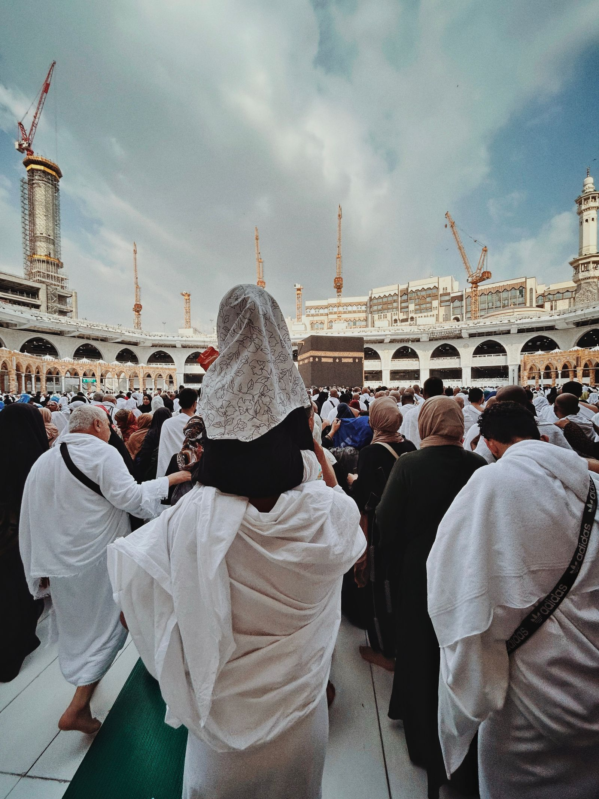

Umrah · Family Guide
Umrah with Kids — Tips for Families Travelling with Children

Yes, children can perform Umrah — at any age, even as babies. A woman once lifted her small child to the Prophet ﷺ and asked, "Is there Hajj for this one?" He said: "Yes, and you will have a reward" (Sahih Muslim 1336a). A child's Umrah is voluntary and rewarded, and the parent who brings them shares the reward. It does not replace the obligatory Hajj they will owe after puberty. New to Umrah yourself? Read our Umrah for First-Timers guide first.
What counts for a child:
Scholars agree a child's Hajj and Umrah are valid and rewarded, but they do not count as the obligatory Hajj — that must be done again after reaching puberty. The pen is lifted from a child until puberty (Sunan Abi Dawud 4403), so if a young child breaks an Ihram rule there is no fidyah on them. If you carry your child during Tawaf, scholars say one Tawaf suffices for both the carrier and the child.
Ihram for children:
Dress boys in Ihram cloths like the adults; dress girls in normal modest clothes. Keep it simple and comfortable — the point is the experience, not perfection.
In the Haram with little ones:
- Use the upper floors for Tawaf with a stroller; the ground-floor mataf gets very crowded.
- A baby carrier often works better than a stroller in crowds.
- Go at quieter times — after Fajr or late at night. Our Tawaf Step by Step and Sa'i Step by Step guides show what each rite involves.
- Keep children hydrated and take breaks; short, calm visits beat long, tired ones.
- Give older children a small job: carrying the Zamzam bottle or remembering a dua.
Safety and paperwork:
Every child needs their own passport and Umrah visa, including babies. Put an ID wristband on your child with a parent's name and phone number, and agree a meeting point in case you get separated. Our Umrah Packing List will help you pack for the whole family.
Make it memorable:
Teach older children the Talbiyah and a short Tawaf dua before you travel. Let them see the Kaaba first from a quiet spot rather than in a rush. A child's first Umrah is often the memory that brings them back as adults. Mothers travelling without a mahram can also read our guide on Women Travelling Alone for Umrah.
Quick questions:
- What age can a child do Umrah? Any age, from newborns upward.
- Does a baby need their own Umrah visa? Yes. Every traveller, including infants, needs a passport and visa.
- Are strollers allowed in Masjid al-Haram? Yes, in most areas; use the upper floors and avoid the crowded ground-floor mataf.
Sources: Sahih Muslim 1336a — Sunnah.com ↗ · Sunan Abi Dawud 4403